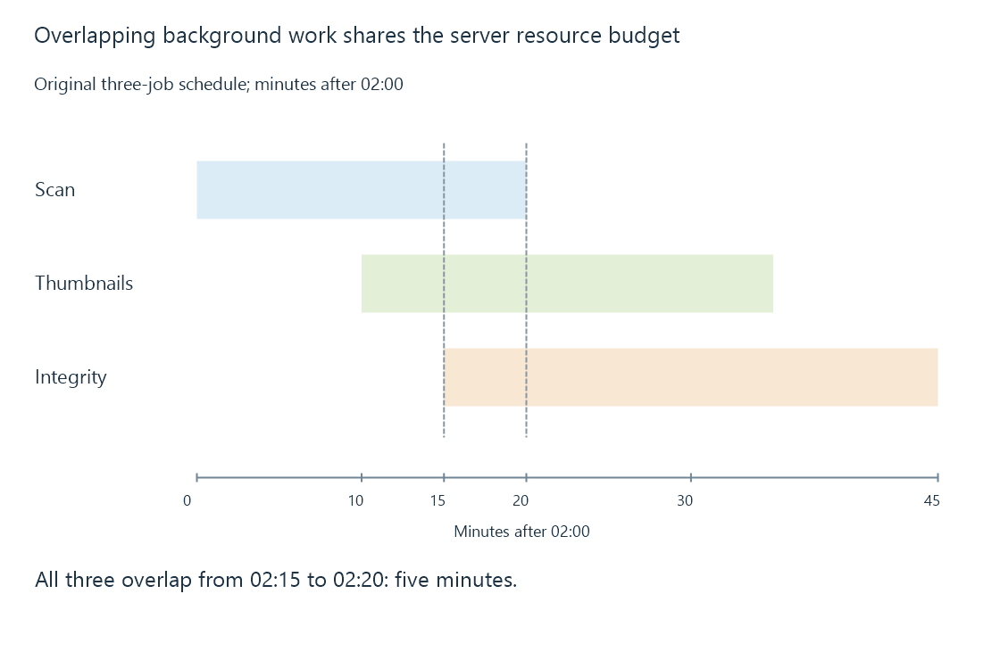

Background task scheduling and shared resources
Background task scheduling chooses triggers and execution opportunities, while actual completion depends on resource availability, overlap and application policy.
A scheduled task has a reason to run and an operation to perform. The trigger might be a time, an interval, a startup condition or an explicit request.
The trigger is not the start time, and the start time is not the successful completion time. Emby's scheduled-task interface provides documented controls and results for background work.
Overlap changes the workload
An original schedule places three jobs on one server:
02:00–02:20 library scan
02:10–02:35 thumbnail work
02:15–02:45 integrity read
All three overlap from 02:15 to 02:20: five minutes

Each job can complete acceptably alone while their overlap creates storage queues, CPU competition or database waits. Changing the nominal trigger does not establish the actual load if a previous run is still active.
| Scheduler observation | Additional question |
|---|---|
| Trigger fired | Was the job started or queued? |
| Job started | Which resources are now in use? |
| Job ended | Did it succeed, fail or stop early? |
| Next interval arrived | Is overlap allowed or a previous run still active? |
A lower priority can change competition without turning an expensive operation into free work.
Downtime creates missed opportunities
If a server is asleep or stopped at a scheduled time, the task cannot perform its ordinary work then. A scheduler might run missed work after startup, skip it or apply another policy. That behavior belongs to the particular task and application.
Do not infer a successful scan from a schedule entry alone. Check the last completion and the task's actual result.
Timing should reflect the resources used
A media scan can exercise many small directory and metadata operations. Thumbnail generation can read media and use an encoder. A full integrity pass reads every relevant byte. Their effects need not resemble one another even if all are called background tasks.
For Emby, use observed duration and resource demand to understand the schedule. A task intended for a quiet period can extend into active playback when its source becomes slower or its scope grows. Database locking and memory pressure provide mechanisms for that shared-workload delay.
See Also
- Library scanning and catalogue reconciliation
- CPU cores, threads and concurrent workloads
- Database locking and competing operations